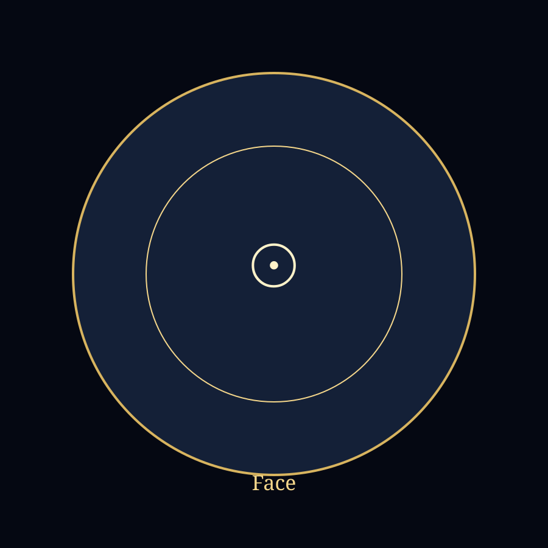

Structure du cycle
- 0–30 sObservation de l’objet.
- 30–60 sObservation lumineuse.
- 1–2 minGrand mouvement, mantra clair.
- 2–3 minPetit mouvement, voix basse ou intérieure.
- 3–4 minGrand mouvement, retour à l’amplitude.
Librairie initiatique · Studio de pratique · École progressive
Cœur de pratique
Objet observé, trace lumineuse, balancement, mantra et ancrage associé.

Support visuel sobre pour fixation et mouvement.